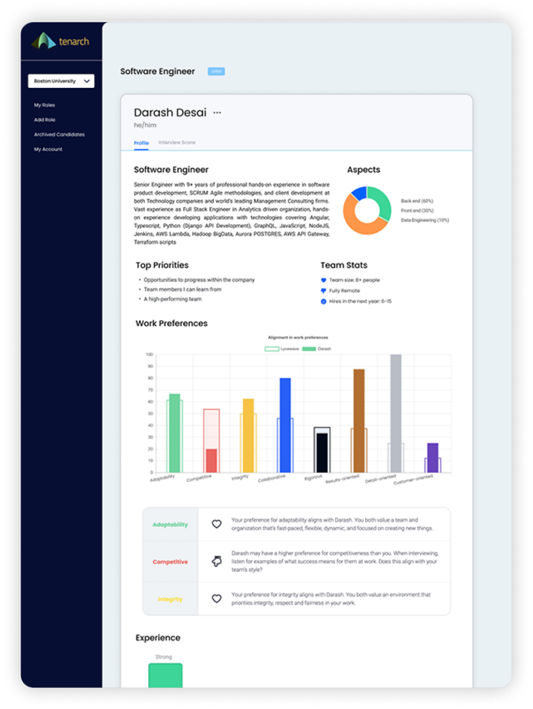

Product Overview
Sifting through resumes is time-consuming and can be full of noise. Tenarch does the pre-work
of reviewing resumes, recruiting phone screens, and getting references, so you can spend your
time on the higher value aspects of hiring.
Tenarch gathers all the right research-backed
signals you need to confidently decide to
interview talent, and surfaces them in our
innovative Tenarch Talent Profile.
The Tenarch Talent Profile is a dashboard that
highlights areas of cultural and skill alignment
between your team and the talent, and areas for
discussion. The profile includes tips on how to
conduct the most effective interview for each
particular candidate based on your company’s
specific needs.
Key Benefits

Quickly identify the right talent for the job, to fit both the role and your organization
-
Avoid bias in your hiring process, so you don’t miss out on the best people
-
Conduct the most effective interview, saving your time and creating and engaging candidate experience
